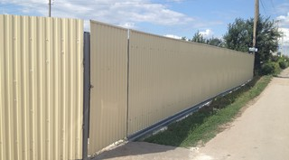
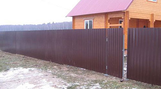
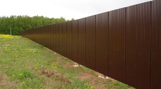

|  |  |  |
| Варианты | Стоимость |
| Высота: 2 м Толщина листа: 0,45мм Окрашенный лист | 1700 |
| Высота: 2 м Толщина листа: 0,45 мм Оцинкованный лист | 1600 |
| Высота: 2 м Толщина листа: 0,4 мм Окрашенный лист | 1650 |
| Высота: 2 м Толщина листа: 0,45 мм Оцинкованный лист | 1600 |
| Высота: 1.5 м Толщина листа: 0,45 мм Окрашенный лист | 1600 |
| Высота: 1.5 м Толщина листа: 0,45 мм Оцинкованный лист | 1550 |
В стоимость не входят и оплачиваются отдельно: